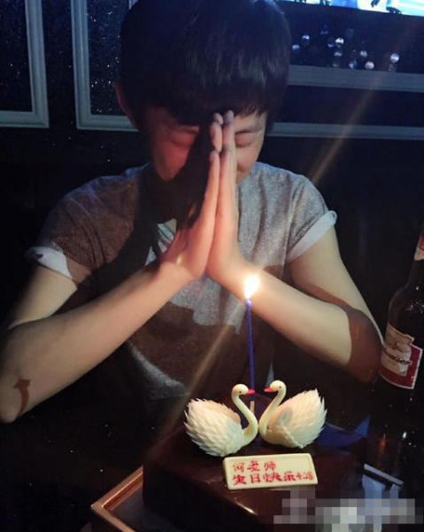
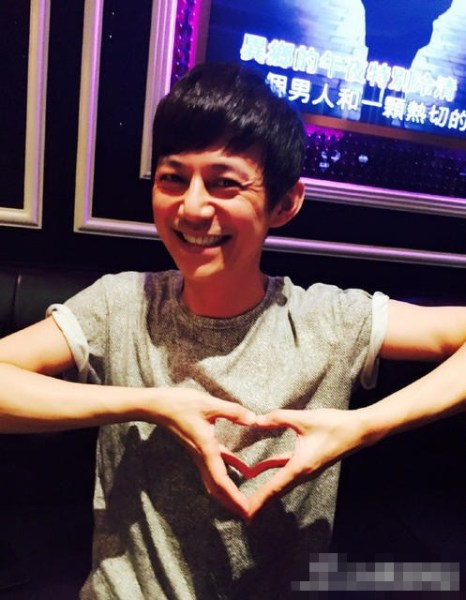
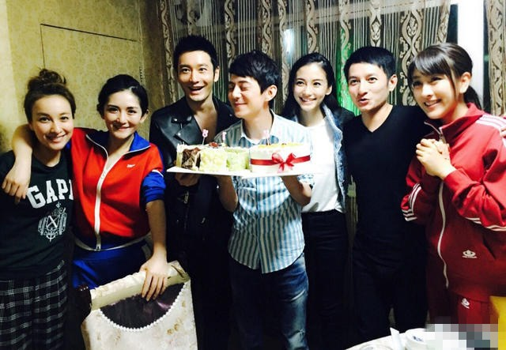

网易娱乐5月14日报道（文/张志明）何炅被举报在北京外国语大学(以下简称“北外”)“吃空饷”。举报人北外教职工乔木在其实名认证的网易博客上称，何炅编制在北外，但已经“好多年没来上过班”，却依然领取工资。有记者联系到北外阿拉伯语系主任薛庆国，对方表示：“学校发展需要各方面人才，目前何炅依然在发挥他的特长为学校工作。”
今晚举报人北外教职工乔木又对何炅吃空饷事件做出了更详细的回应。
举报人微博原文：
14日：警察一枪，带出何炅也在大学吃空饷
黑龙江庆安警察一枪打死人，带出该县副县长之妻长期不上班，在学校吃空饷的丑闻。目前该县长因为年龄、学历、妻子工资造假，已被停职调查。利用关系，吃空饷的绝不止这一例，比他名气更大的娱乐明星何炅，也长期在某大学吃空饷。
根据该大学《关于我校编制内人员工资发放情况的公示》（2015年1月26日校内网所发），序号869的姓名是何炅，类别为在职。
经向所在院系的老师证实，此何炅就是娱乐明星、主持人何炅，并称何的编制虽在学校，但好多年没来上过班，相关的工作、邮件、联系等，都不得不由其他老师处理。
高校编制内领工资的老师，大概分为教学、研究、管理三类岗位，何炅不管属于哪一类，都应该来上班，才能占有编制、领取工资。公办大学教师的基本工资（即人头费），来自财政拨款，即税款。
就算何炅属于并无依据的“停薪留职”，本人虽不领取工资，但在编制内的老师，上面都会发放工资。如果不是何炅在吃空饷，那么他这么多年的工资被谁领了？怎么处理的？这涉及到财政税款，需要给纳税人一个交待。
根据国家事业单位管理的规定，也不容许像这样长期请病假或事假的，需要做病退或辞职处理。如果一年累计旷工超过30天，更是要被出名。
该校今年根据《教育部办公厅关于开展“吃空饷”问题集中治理工作的通知》，进行了一次自查自纠，不知结果如何？
何炅是公众人物，大学是公立大学，花的是公众的钱，应该给公众有所交代？
何炅是个很有才华的艺人，受过正规教育，出道以来的社会评价一直正面。既然全职全时活跃在娱乐界，不能履职，为何还要保留高校的编制？
现在学校、校长、教授的名声时有争议，许多高校特招的学生里有一帮文艺、体育明星，难道明星老师也要享受特殊待遇吗？
15日：“一不做，二不休”的何炅[博文链接]
我发了《警察一枪，带出何炅也在大学吃空饷》一文后，许多媒体跟进，采访我。我要说的都在文章里，不能听信我的一面之词，最好去采访校方和何炅。
学校的查号台是010 8881 6200，可以问到阿语系、人事处、组长部、宣传部、纪委、计划生育办，任何部门的办公电话。
有媒体报道说我是举报，我给谁举报？我只是自说自话，在公共平台上，讨论和公众人物相关的公共话题。
10多年前就听过何炅的事，没有证据，也没有太在意。那日和同事聊天，说起最近警察开枪，牵扯出副县长妻子吃空饷的事，同事说学校也有，比如何炅。了解了第一手情况，又查阅了有关的文档和规定后，找到了他在编的证据。
何炅在编，但不上班、吃空饷的事实是清楚的，至于原因和评论是另外一回事。
这方面有相关的认定和处理规定：《国务院办公厅转发人力资源社会保障部等部门关于开展机关事业单位“吃空饷”问题集中治理工作意见的通知》(国办发〔2014〕65号)、《教育部办公厅关于开展“吃空饷”问题集中治理工作的通知》，学校今年初也搞过“自查自纠”运动。一阵风，过了。
任何人在大学工作，不管是教学、研究或行政管理，一定要保证时间在岗。很多人有误解，以为上课或有事来就行。大学支付工资、职称补贴、福利待遇，作为全职的老师，还有学生指导、同行交流、公共服务、集体参与的任务。
哪像何炅这样成天在外边飘着，“一不做，二不休”，第一职业不干，第二职业娱乐主持干起来没完没了的。
有媒体援引校方人士的话说，让何炅在外面是利用他的名气，拉赞助、搞人脉。听起来有趣但荒唐。管理规定对任何人都应一视同仁，校长都要到岗上班，怎么偏偏容许他一骑绝尘？这个对其他老师是否公平，或者说别人能否也像他一样不上班，在外边赚钱走秀？而且大学老师该不该这么做？到底拉到什么赞助？存疑。
如果没有规矩，那么总理也不用黑着眼圈日理万机了，编制挂在国务院，利用人脉，成天在外面拉订单、搞推销算了。
学校有三个引以为荣的娱乐明星：杨澜、许戈辉、何炅。前两个是校友，兼职出力，后一个是专职教师，有编制，有薪酬。如果何炅不能保证时间全职工作，为什么不能辞职，以校友身份出力？
不管有何内幕，最终责任还在他本人。就像不管别人怎么勾引，只要不该硬的不硬，不该进的不进，何必害怕朝阳区群众。
何炅想必是不在乎这点钱的，也许大学老师的编制和名分更为重要。非常难进的门槛，良好的社会评价，不用交社保就能享受养老、医疗，谁不愿意挂在大学，在舞台上被人叫老师呢？
至于我的动机，当然是羡慕嫉妒恨，为了出名、炒作、搏出位，何炅能跨教育界，我为什么不能进军娱乐界？
有人不解我自揭校丑。这么多年我连美国政府、在美留学生家长的政府都敢批评，有什么不能说学校的？不在于我怎么说，而是这个事实有没有。
爱之深，责之切，大学本来是修身齐家治国平天下的地方，不断地被官员和商人上了后，现在艺人也越来越多。我如果不说，最终就是劣币驱逐良币。
何炅的名气大，但他在娱乐圈，我在学术界；他主持节目，我教新闻写评论；他是辅导员，我是教授，工种不同，各有贡献。作为当红明星，他有他的千万粉丝。作为专栏作家，我有我的万千读者。本来就不是一个道上的，谁炒谁呀？
教学研究、管理服务的老师，不能和搔首弄姿、舞台走秀的艺人比，虽然各有贡献，但李普曼和罗德曼，怎么比？范长江和潘长江，又怎么比？